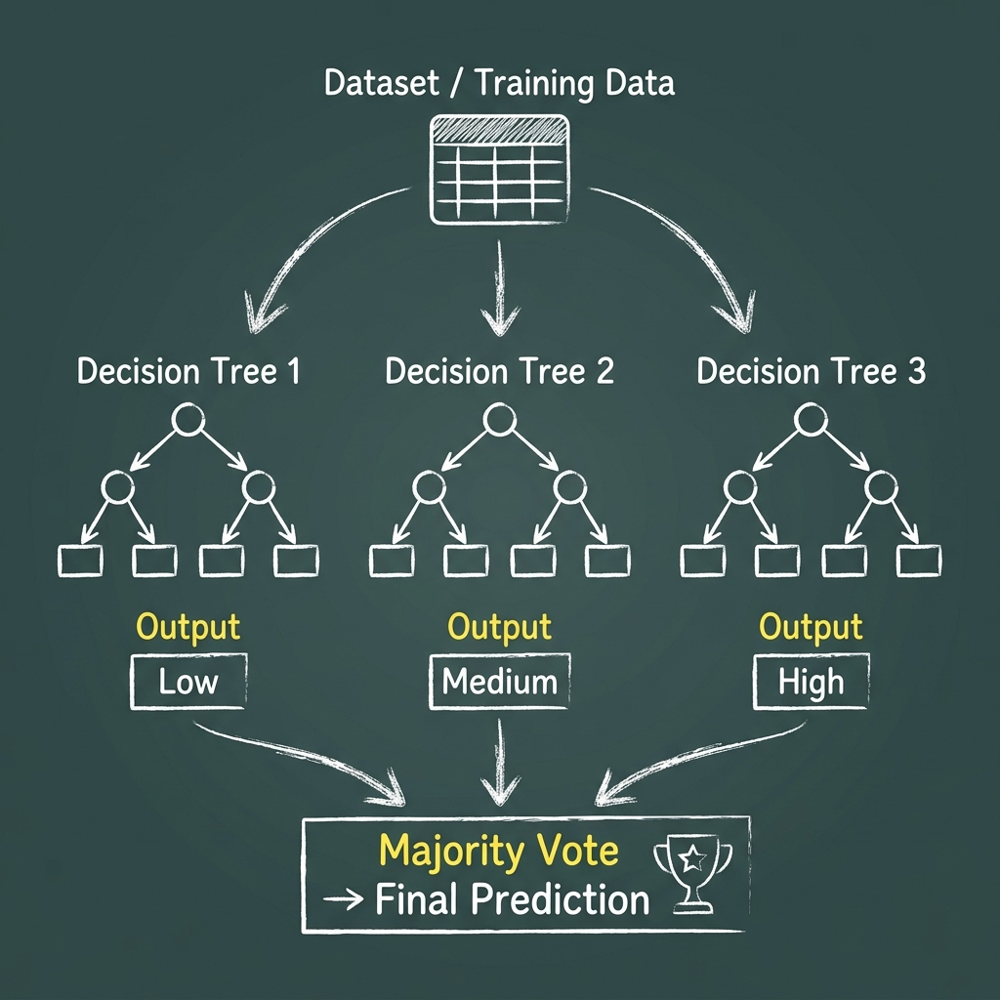
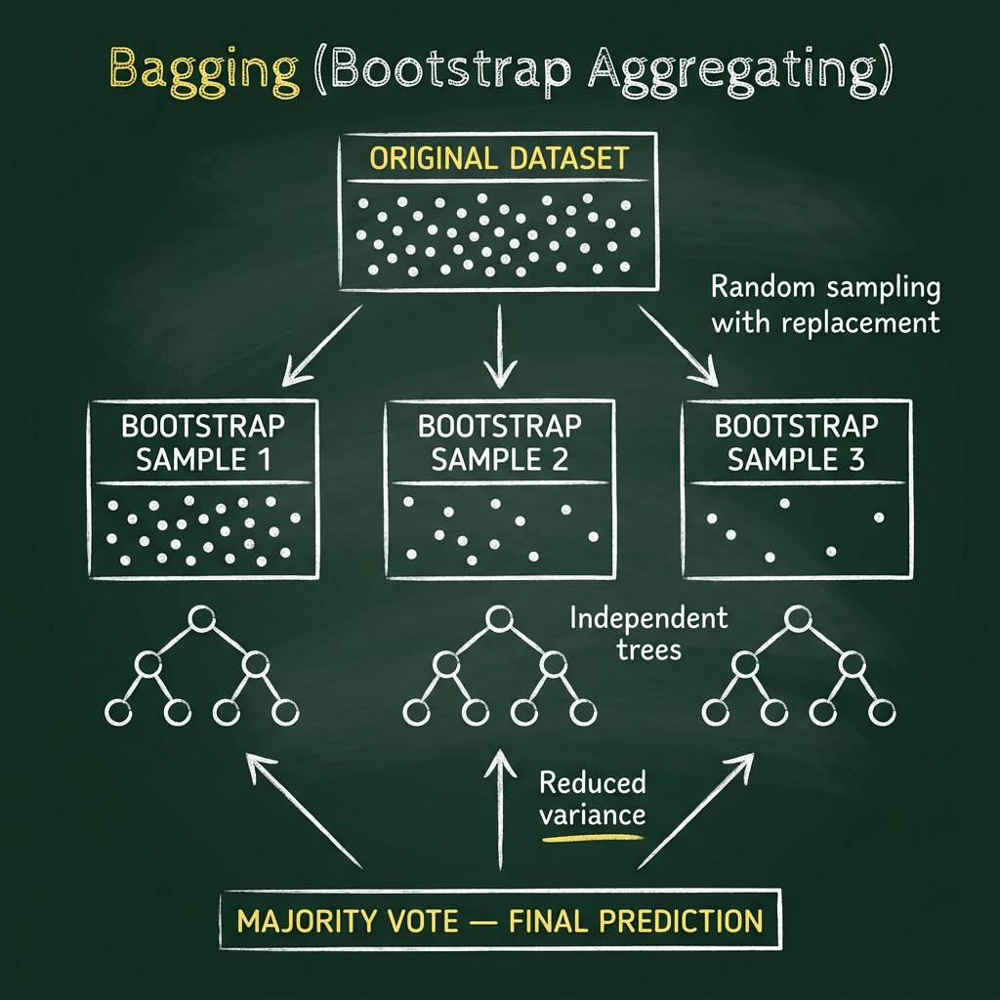
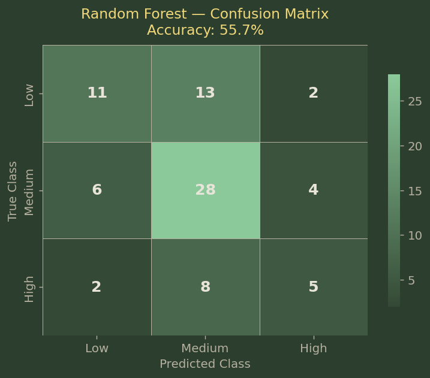
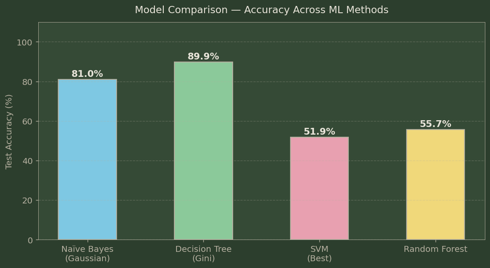
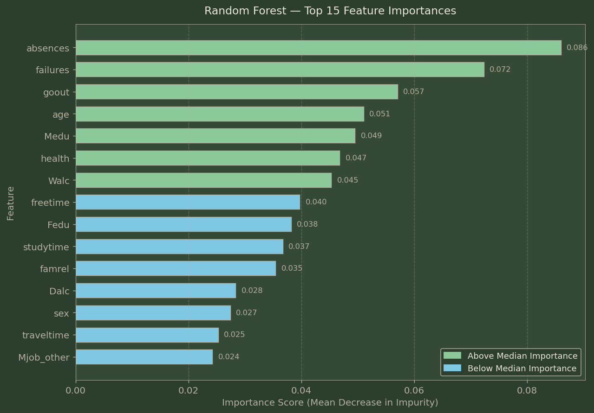
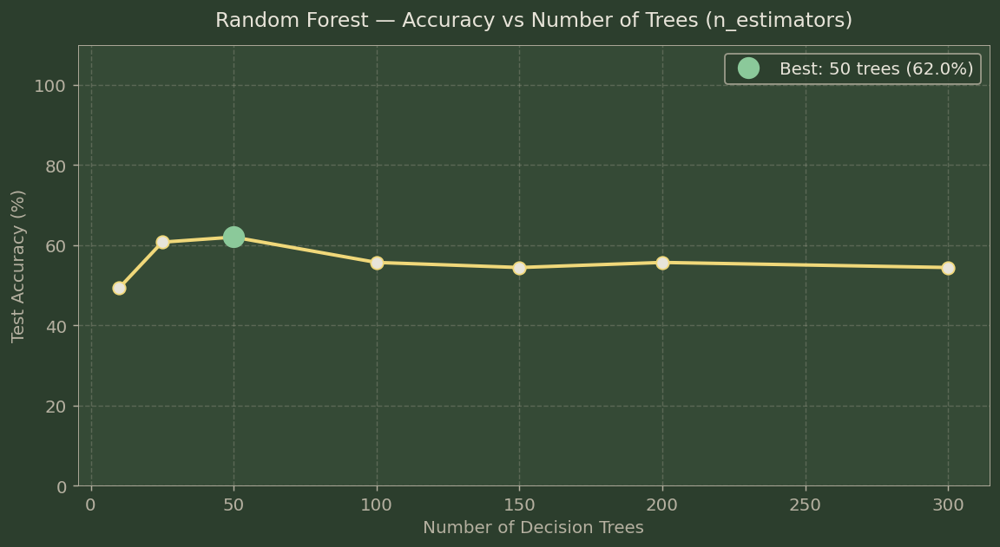
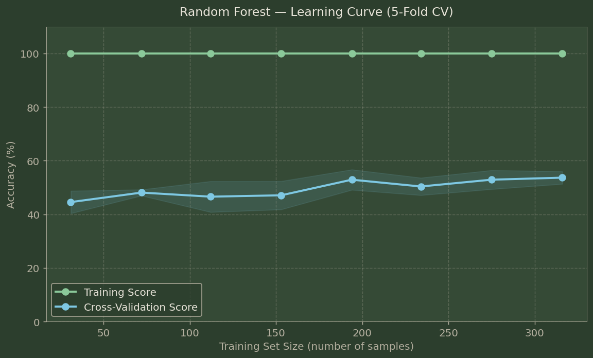

Random Forest Classifier
When one tree isn't enough — combining hundreds of decision trees through democratic voting to build a more powerful and robust prediction system.
Overview
Ensemble learning is one of the most powerful ideas in all of machine learning: instead of building a single complex model and hoping it gets things right, you build many simpler models and let them vote. Each individual model may be imperfect — it might fail on some kinds of students, overfit to certain patterns, or simply miss the forest for the trees. But when hundreds of these imperfect models vote together, their individual errors tend to cancel out, and their shared correct patterns reinforce. The result is a model that is dramatically more robust, accurate, and reliable than any single model could be.
Random Forest is the most widely used and best-understood ensemble method, and it builds directly on the Decision Trees we explored in an earlier tab. The algorithm creates a forest of many Decision Trees, each trained on a different random subset of the training data. When classifying a new student, every tree in the forest casts a vote for Low, Medium, or High, and the majority vote wins. The "random" in Random Forest refers to two sources of randomness: (1) each tree is trained on a bootstrap sample — a random subset of the training data drawn with replacement — and (2) at each split within each tree, only a random subset of features is considered, preventing all trees from always using the same dominant feature (like absences) and forcing them to explore different patterns.


Why Ensemble Learning Beats Single Models
A single Decision Tree, no matter how carefully tuned, has a fundamental weakness: it builds a very specific set of rules based on the exact training data it saw. Small changes in the data can produce dramatically different trees — this is called high variance. Random Forest fixes this by averaging out that variance. Each tree in the forest sees a slightly different version of the data and builds a slightly different set of rules. When aggregated, the quirks of individual trees cancel out, leaving behind only the patterns that are truly robust and generalizable.
Random Forest also dramatically reduces overfitting. A single deep tree will memorize the training data and then fail on new students whose profiles don't exactly match. A Random Forest, by averaging predictions across hundreds of trees each trained on different samples, is far less likely to be tricked by any one student's unusual combination of features. This robustness is why Random Forest consistently ranks among the top-performing models across diverse real-world datasets.
Key Hyperparameters for this analysis:
• n_estimators=200 — 200 individual Decision Trees
• max_features='sqrt' — each split considers √39 ≈ 6 random features
• min_samples_leaf=2 — minimum 2 students at each leaf (prevents tiny over-specific rules)
• class_weight='balanced' — compensates for the unequal class distribution (more Medium students than High or Low)
• random_state=42 — fixed seed for reproducibility
Data Preparation
The Random Forest uses the same cleaned, encoded dataset as the SVM analysis — 39 behavioral and demographic features, with G1 and G2 excluded to make the classification task genuine rather than trivial. The same stratified 80/20 split is used: 316 training students and 79 testing students, with Low/Medium/High proportions matched in both sets. Unlike SVMs, Random Forests do not require feature scaling — they are based on tree splits that are purely order-based, so the absolute scale of features doesn't matter.


Code
Implemented in Python 3. Core packages: sklearn (RandomForestClassifier, train_test_split, learning_curve, classification_report, confusion_matrix), pandas, numpy, matplotlib, seaborn.
Results
The Random Forest with 200 trees achieved 55.7% accuracy on the 79-student test set — the highest accuracy of any model tested without using G1 or G2. This represents a meaningful improvement over SVMs (~51.9%), Naïve Bayes without grade features, and a random-chance baseline of 33%.
Confusion Matrix


Feature Importance
One of Random Forest's greatest advantages is its ability to measure feature importance — which behavioral and demographic characteristics most influenced the classification decisions across all 200 trees. The chart below shows the top 15 most important features, measured by how much each feature reduces impurity when used as a split point across all trees.

Key Finding — Top Features Without Grades:
The three most important features identified by Random Forest are: absences (how many school days a student missed), failures (past academic failures), and goout (how often a student goes out with friends). This tells a compelling story: when you remove the grade signal, what's left as the strongest predictor of academic performance is a student's physical presence in school, their academic history, and their social lifestyle choices. Alcohol consumption (Walc, Dalc) and family relationship quality (famrel) also appear, reflecting the project's broader finding that lifestyle and home environment matter enormously for academic outcomes.
Number of Trees — Finding the Sweet Spot

One question in Random Forest design is: how many trees are enough? Adding more trees always improves stability but quickly hits diminishing returns. The plot above shows that accuracy stabilizes around 100–150 trees. We use 200 trees to ensure robustness without over-extending computation time.
Learning Curve

The learning curve plots model accuracy against the number of training samples used. It reveals two key insights: (1) the training accuracy starts very high (overfitting on small data) and decreases slightly as more training data is added — a healthy sign; (2) the cross-validation accuracy rises gradually as more training data is available. The narrowing gap between training and validation scores shows that Random Forest is not severely overfitting, and that collecting more student data would likely further improve performance.
Conclusions
The Random Forest analysis provides the clearest and most nuanced picture of what drives student performance when we commit to predicting it from behavioral and demographic data alone. At 55.7% accuracy — a 22-point improvement over random guessing and the best result among behavioral-only models — Random Forest demonstrates that ensemble methods genuinely extract signal that individual models miss. Each tree in the forest sees a different "angle" on the same students, and their collective judgment outperforms any single perspective.
The feature importance results are perhaps the most valuable output of this entire analysis. Absences emerge as the single strongest predictor — students who miss school frequently are far more likely to underperform, regardless of their family background or study habits. Past failures reinforce this: the compounding nature of academic struggle is real and measurable. Social behaviors — particularly how often a student goes out and their weekend alcohol consumption — complete the top predictors, aligning with and amplifying the findings from our earlier Decision Tree and Clustering analyses.
For students, families, and educators, the Random Forest's story can be distilled into a practical message: showing up matters more than anything else. Once a student is regularly present, the next most important thing is their history — whether past struggles have been addressed or left to compound. And surrounding lifestyle choices, while they seem personal and unrelated to academics, have a measurable and consistent relationship with how well students learn. These are not immutable traits. They are changeable conditions, and the Random Forest gives us the data to prioritize which changes have the highest impact.